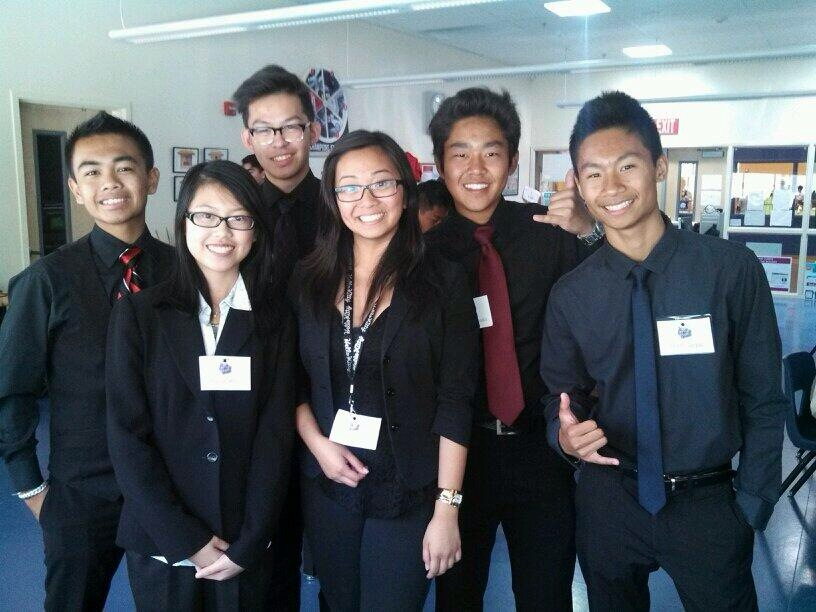
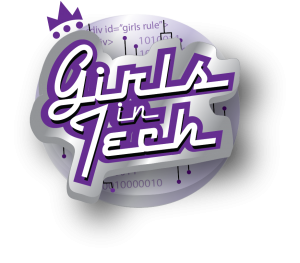
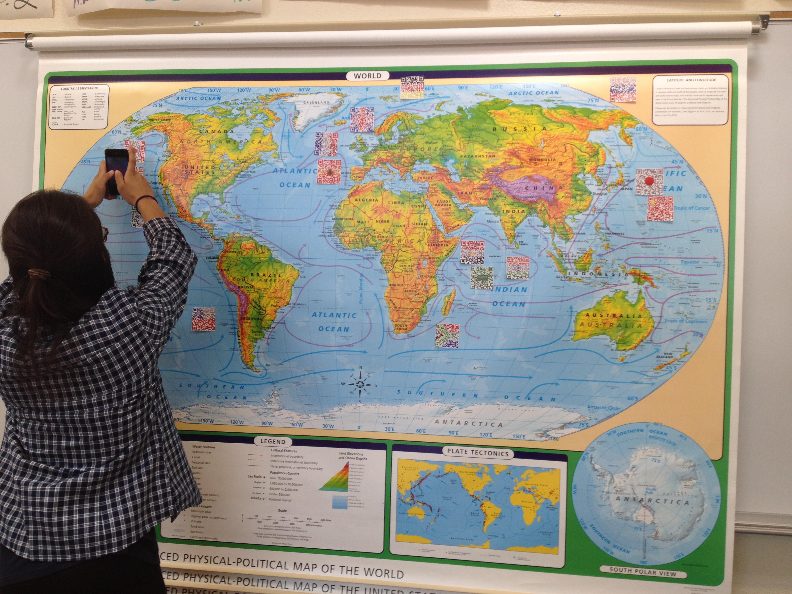

Sophomore Year
Content Knowledge

This was a website that we had to create for our English Teacher Mr. Moore. His requirements for this website was a educational Shakespeare website, that could be used to educate the following year students when learning Shakespeare. In this first major website, that we had to create, I learned that orginization is key to a good website. I put this assignment in content knowledge, because it really tested me on my knowledge of coding.
Presentation Skills


The first photo was a group photo for the Stop Motion Studio Team for the Girls in Tech Cofference. The web design program of Southwest invited a group of middle school girls, to introduce them to the wonderfull world of technology. My team was able to teach the girls how to create a stop motion video, which was fun for my team and also for the girls. This project increased my presentation skills because the team had to present how to use the app to the girls.
Teamwork and Collaboration
This youtube video is an animation that myself and my animation class had created for an autistic kid named Ben. His picture book, "Little Red Flying Hood" was created by Ben in a program called Adobe Illustrator, and it was a published book. However, when Ben wanted the book to be animated, the class decided to animate the book for him. I was part of a huge team of animators in completing this project for Ben. The project really helpped me to collaborate with others efficiently.
Use of Resources

This photo was our finished project for our QR Code project. This project consisted of using the technology of QR Codes to assist a teacher. In this project, we decided to help our world histoy teacher to put a brief description of each country into a linked QR Code. This was catergorized in use of resources, because for this project we used a lot of websites to create and link the qr codes.
Work Ethic
This assignment was for my marketing class. I included this into my portoflio, because a main focus in the class was to be employed, and knowing what to put into a letter of application, or a resume. I put this in the work ethic tennant because I needed this to be employed. Although I was not hired for a marketing job at Macys, I was able to get a job at a restaurant.
Writing Skills
The link above is a PDF file for a project based learning for my world history class. It outlines, the importance of humans natural rights. Mr writing skills greatly helpped me complete this assignment because of its long writing. It took discipline, to be able to finish this project and writing so much, without giving up.